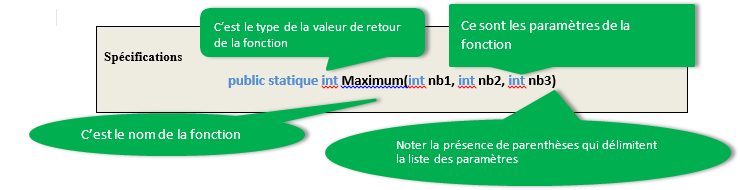

Info
Pour faciliter la compréhension du langage nous utiliserons le mode console.
a - Utilisation de fonctions prédéfinies
Une fonction est morceau de programme qui réalise un traitement
précis et qui est appelé à partir du programme principal. Cela
permet :
- de rendre le programme principal plus clair et plus
simple,
- de factoriser du code, c’est à dire rendre le programme
réutilisable plusieurs fois sans avoir à le réécrire,
- permet d’utiliser des codes dont on ne connait pas la
structure mais dont on veut utiliser les fonctionnalités,
comme les fonctions d’affichage et de saisie dans C#
Le langage C# dispose d'une large bibliothèque de fonctions
prédéfinies. En voici quelques exemples :
CompareTo permet de comparer 2 chaines de
caractères,
ToUpper met une chaine de caractère en
majuscule.
L’appel de la fonction vise à utiliser les fonctionnalités du
code et non pas à connaitre sa structure. Pour appeler la
fonction il faut connaitre sa signature. Celle-ci nous renseigne
sur les paramètres qu’elle doit utiliser et sur ce qu’elle va
renvoyer.
string a;
int b;
a = Console.ReadLine(); //appel de la fonction saisir pas de paramètre renvoie un string
b = Convert.ToDouble(a); //appel de la fonction de conversion 1 paramètre renvoie un double
Console.WriteLine(b); //appel de la fonction d'écriture 1 paramètre ne renvoie rien (void)
Pour résumer
Une fonction :
- a un nom
- peut avoir des paramètres
- retourne une valeur d’un certain type
- peut avoir besoin de variables
- est composé d’instructions
Les fonctions fournies par le langage sont utilisées de façon
très particulière pour la manipulation de chaîne. En effet, ces
fonctions (appelées méthode de classe) sont toujours associées à
la chaîne de caractères pour laquelle la manipulation sera
effectuée.
La syntaxe est donc la suivante, si bien entendu il existe
une variable de retour :
méthode :
variableRetour =
nomVariableString.nomFonction([paramètres])
fonction :
variableRetour = nomFonction([paramètres])
Le retour de la fonction doit être soit :
- Affecté dans une variable du programme principal -
d =
maximum(a, b, c);
- Envoyé à l’affichage -
Console.WriteLine(maximum(a, b,
c));
- Intégré dans une autre fonction -
d = maximum(a,
maximum(a, b, c), e);
Signature de fonction
Pour connaitre les paramètres et les types d’envoi, il faut
connaitre les spécifications. On peut indiquer les spécifications
de la fonction sous forme de tableau :
| nom |
Rôle |
Paramètres |
Valeur de retour
|
Maximum
|
Retourne la valeur maximum entre 3 entiers |
Les 3 entiers |
La valeur du maximum
|
Elles peuvent aussi être indiquées sous forme d’instruction :

Différence
Une fonction ne se déclare jamais, elle est
appelée.
L’utilisateur d’une fonction n’a pas à connaitre le programme
de la fonction ; seule la signature de la fonction le
concerne.
Danger
Il faut faire la différence entre les spécifications et
l’appel de fonction.
Les spécifications donnent le nombre de
paramètres et leur type, ainsi que le type de retour s’il
existe.
L’appel de fonction ne prend en compte que les paramètres et
jamais leur type. Si les paramètres ont des
variables, il sera nécessaire de les déclarer avant
l’appel de la fonction, comme dans l’exemple
précédent.
b - Écriture de fonctions
La déclaration de fonction permet de spécifier à C# la signature
de la fonction. Dans sa forme générale elle correspond à :
Déclaration générale de fonction :
static type_retourné nom_Fonction([paramètres])
{
// Déclaration de variable(s)
// Instructions
return variable ou expression ;
}
Définition d’une fonction
Les 6 étapes de définition
- Nom : un identificateur suffisamment explicite.
- Paramètres : la liste des paramètres d’entrée-sortie du
programme.
- Préconditions : une liste d’expressions booléennes qui
précisent les conditions d’utilisation des paramètres.
- Appel : des exemples d’utilisation du programme avec les
résultats attendus (jeu de tests).
- Description : une phrase qui dit ce que fait le programme.
- Code : la séquence d’instructions nécessaires à la
résolution du problème
Cela donne concrètement :
Déclaration générale de fonction maximum :
static int maximum(int nb1, int nb2, int nb3)
{
int max = nb1;
if (nb2 > max) {max = nb2;}
if (nb3 > max) {max = nb3;}
return max;
}
Fonction principale :
int a, b, c, d;
a = 2;
b = 3;
c = 5;
d = maximum(a, b, c);
Bonnes pratiques
A chaque étape de la spécification, le code de la fonction
doit toujours être exécutable même s’il ne
donne pas encore le bon résultat.
Le jeu de tests ne sera vérifié qu’une fois l’implémentation
correctement définie.
Propriétés d’un programme
- Validité : aptitude à réaliser exactement la tâche pour
laquelle il a été conçu.
i.e.:
L’implémentation de la fonction doit être conforme aux
jeux de tests.
- Robustesse : aptitude à se protéger de conditions anormales
d’utilisation.
i.e.: La fonction doit
vérifier impérativement ses préconditions.
- Réutilisabilité : aptitude à être réutilisé pour résoudre
des taches équivalentes à celle pour laquelle il a été
conçu.
i.e. : La fonction doit être
correctement paramétrée.
Variables publiques et privées
L’existence de fonctions pose le problème de la " durée de vie "
des variables, ce qu’on appelle leur portée.
Pour faire simple, une variable peut être déclarée :
- Comme privée, ou locale (c’est en général l’option par
défaut). Cela signifie qu’une telle variable disparaît (et
sa valeur avec) dès que prend fin la fonction dans laquelle
elle a été créée.
- Comme publique, ou globale. Ce qui signifie qu’une telle
variable est conservée intacte pour toute l’application,
au-delà des ouvertures et fermetures de procédures.
Comment choisir entre déclarer une variable en Public ou en Privé
? C’est très simple : les variables globales consomment
énormément de ressources en mémoire. En
conséquence, le principe qui doit présider au choix entre
variables publiques et privées doit être celui de l’économie
de moyens : on ne déclare comme publiques que les
variables qui doivent absolument l’être. Et chaque fois que
possible, lorsqu'on crée une fonction, on utilise le passage de
paramètres par valeur plutôt que des variables publiques
c - les fonctions lambda
Les expressions lambda sont utilisées dans le cas de fonction anonymes. Il s'agit de créer des fonctions dont le nom n'a aucun intérêt dans la programmation.
Concrètement on s'intéresse plus au résultat qu'a l'appel de fonction.
ce genre de fonction est utilisée dpour des fonctions simples. Soit la déclaration suivante :
Func <string,string> greet = (name) =>$"Hello {name}!";
Qui correspond à :
static string greet(string name)
{
return $"Hello {name}!";
}
Retournera la même valeur pour
Console.WriteLine (greet("TOTO"));// Hello TOTO
Exemple objet
Dans un cadre qui dépasse un peu cette partie du cours, car l'objet est vue un peu plus loin, nous avons aussi
public override string ToString() => $"{fname} {lname}".Trim();
A la place de :
public override string ToString()
{
return $"{fname} {lname}".Trim();
}